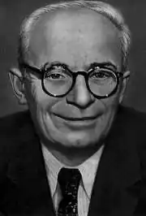
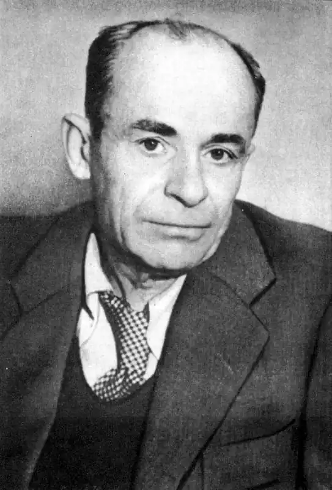
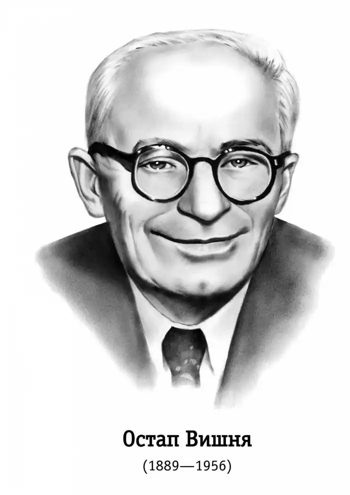
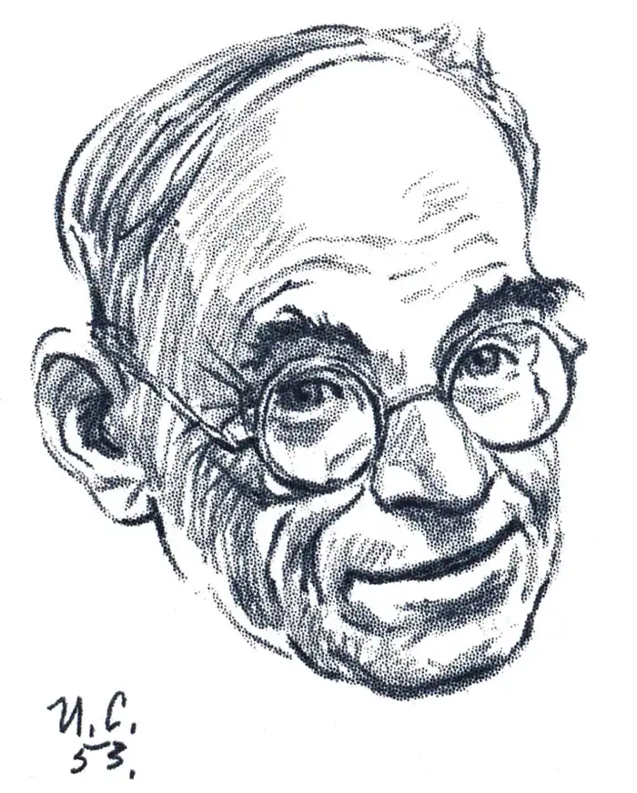
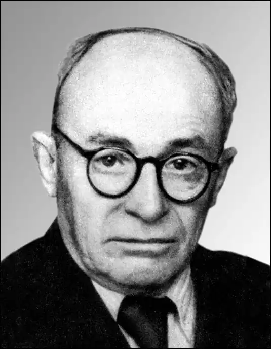

Остап Вишня
(13 листопада 1889 — 28 вересня 1956)
Письменник унікальної (не тільки для України) популярности, рекордних — мільйонових! — тиражів, твори якого знали навіть неписьменні, за що його деякі вибагливі критики виключали з літератури, а диктатори — із життя. Хоч спіткала його доля гумориста-мученика, але й після десятилітньої каторги на Печорі, немов той Мамай чи Байда, не перестав він "усміхатись" аж до смерти. Ось кілька голосів: "Коли ходить про сатиру, то замість Гайне, Свіфта, Рабле, що, відкидаючи якусь ідею, нищили її цілу, з голови до п'ят, — знаходимо... Остапа Вишню, дотепного, талановитого, але до дрібничок "літературного обивателя", як казав Щедрин, "непреклонного облічітєля ісправніковской неосновательності і городніческого заблуждєнія", протестанта проти "маленьких вад механізму" (Дмитро Донцов, 20-ті роки). "Традиція "губановців" не раз позначається на гуморі Остапа Вишні... Низькопробної культури гумор Остапа Вишні. О. Вишня — це криза нашого гумору... Гудити О. Вишню з його "прийомами" — це значить фактично писати рецензію на читача... Ми констатуємо факт величезної популярности і успіху серед читачівської маси Вишневих "усмішок". Цей факт примушує нас сказати, що тільки низький культурний рівень або справжня "культура примітивізму" (хай пробачить нам пан Донцов на плягіяті) може продукувати Вишневий гумор і живитися ним. Недалеке майбутнє несе забуття Остапові Вишні" (Б. Вірний — Антоненко-Давидович, 20-ті роки). "Усмішки" Остапа Вишні я полюбив. Полюбив їх за те, що вони запашні, за те, що вони ніжні, за те, що вони жорстокі, за те, що вони смішні і водночас глибоко трагічні..." (Микола Хвильовий. "Остап Вишня в світлі лівої балабайки". ПРОЛІТ-ФРОНТ, ч. 4, липень 1930, с. 309). "В наслідку допомоги Україні з боку ЦК ВКП(б), і насамперед Сталіна, агенти імперіялістичних інтервенціоністів були розбиті, націоналісти були демасковані, і куркульські ідеологи та їхні прихильники були практично прогнані з поля української радянської літератури... Зник ореол тих колишніх "зірок, славу яких штучно роздмухували націоналісти: куркульський блазень Остап Вишня... і подібні". (Іван Кулик, у московському альманаху ЛІТЕРАТУРА НАРОДІВ СРСР. 1934, ч. 7-8). "Як дасть Бог вижити каторгу — то нехай мені рука всохне, як візьму перо в руки. Тільки — Сибір, глушина! Сільця розставляю і рибу ловлю" (Остап Вишня у розмові з своїм другом Йосипом Гірняком влітку 1934 року в Чіб'ю, в концтаборі "Ухтпечлаг"). У своїх ще повністю не опублікованих спогадах про Остапа Вишню Йосип Гірняк, відомий актор "Березоля", оповідає також, як він 1934, будучи в'язнем Ухтпечлагу, читав раз перед авдиторією в'язнів-шахтарів оповідання російського гумориста Зощенка. Крики із залі: "По-українському! Вишню давай!" Серед авдиторії каторжників був і Остап Вишня, що дістав 10 років "віддалених таборів". "Починаючи з 1934р., у зв'язку з тим, що громадянське ім'я письменника було несправедливо опорочене, в його творчій діяльності настає майже десятирічна перерва". ..."Усвідомив свій патріотичний обов'язок радянського письменника-громадянина і Остап Вишня" (це все, що сказано про шалене цькування Вишні 1930 — 33 років та про його муки в арктичному концтаборі 1934 — 43 pp. у товстелезному томі ІСТОРІЯ УКРАЇНСЬКОЇ ЛІТЕРАТУРИ, т. 2, РАДЯНСЬКА ЛІТЕРАТУРА, Київ, Академія Наук УРСР, 1957). "Все життя гумористом! Господи! Збожеволіти можна від суму!" (Остап Вишня. "Думи мої, думи мої..." ДНІПРО, Київ, ч 2, 1957; посмертна публікація уривків із передсмертного щоденника Вишні). Отже, не вдався плян утечі від власного таланту-погибелі. Гірняк оповідає: 1935 року Вишню як видатного "злочинця", засудженого за "терор проти вождів партії", перекинули в ізолятор на Кожву (коло Воркути), а звідти 1937 року — саме в час масових розстрілів політв'язнів по концтаборах — відправили пішим етапом — 800 кілометрів! сніг! пурга! морози! — назад до Чіб'ю для додаткового "слідства", а фактично на розстріл. Та по дорозі Вишня, хронічно хворий на улькус і ревматизм, захворів на гостре запалення легенів і був покинутий в непритомному стані на якійсь таборовій цегельні, за дротом. Поки Вишня дужав смертельну хворобу — минула масова єжовська операція розстрілів в'язнів. 1943 року Вишня кінчає десятий рік тюрми й концтабору, тим часом як Україна — тероризована, зруйнована, але неупокорена — активним і пасивним спротивом зустрічала і проводжала брунатних і червоних окупантів, виростаючи з трагедії терору і війни на міжнародний фактор. Недомученого Вишню перекидають просто із арештантського барака на Печорі в письменницький кабінет у Києві. Він мусить своїми гуморесками спростовувати наклепи "націоналістів", нібито улюбленця цілої України — Вишню — закатувала Москва, і висміяти "буржуазних націоналістів" та насамперед УПА. Так 1945 — 46 появилась "Самостійна дірка" Остапа Вишні — голос гумориста з могили. Як на лихо, "буржуазні націоналісти" й повстанці привітали воскресіння Остапа Вишні, частину заслуги в якому цілком слушно приписали і собі, та подякували гумористові, що він першим у широкій радянській пресі поінформував світ, що УПА ще й досі живе і бореться. Було якесь нерушиме порозуміння між Остапом Вишнею і мільйонами його читачів. Мов воду крізь сито, спускали вони все, що було в "усмішках" Вишні для цензури й диктатури, а собі брали зернятка сміху, який завше давав свіжий віддих у задушливій атмосфері загального рабства. Як у 20их роках селяни не брали серйозно його слів про куркулів, так у 40-их роках повстанці не брали серйозно його слів про "націоналістичних запроданців", а сміялися, читаючи його "самостійну дірку", бо ж вона була символом "самостійности" УРСР під московським чоботом. Мав Вишня усі підстави записати слова любови і вдячности отаким читачам у згаданому щоденнику: "Я дожив до того часу, коли ходжу вулицями в Києві... І я гадаю, що всіма своїми стражданнями, всіма моїми серцями, і працями, і думками маю право сказати всім моїм читачам: "Я люблю вас! ...Спасибі тобі, народе, що я єсть я! Хай буде благословенне твоє ім'я!.. я маю честь велику, чудесну, незрівнянну і неповторну, ч е с т ь належати до свого народу". Літературна спадщина Вишні — це насамперед тисячі гуморесок у щоденній пресі на всі теми дня — своєрідний тип фейлетону, що йому він давав назву "усмішка" або ще "реп'яшок". Родились вони головно з праці Вишні у редакціях перших українських радянських газет "Вісті ВУЦВК" (куди його просто з підвалу тюрми ЧК виринув Василь Блакитний навесні 1921) і "Селянська правда". В "усмішках" Вишні віддзеркалився своєрідний тодішній "ренесанс" селянства як соціяльного стану України, який, скинувши в революції російсько-поміщицьке ярмо, не дався поки що накинути собі нове російсько-колгоспне ярмо, а змусив Москву до НЕП-и і політики українізації. "Вишневі усмішки сільські", з одного боку, кпили з вікової селянської відсталости, темноти, анархічного егоїзму й асо-ціяльної роздрібнености, а з другого — пускали гострі сатиричні стріли на розплоджуваний Москвою паразитарний бюрократизм нової панівної верхівки імперії. Селяни відчували у Вишні свої друга і речника. Вони розуміли цього гумориста, що сам родився і виріс у сільській родині, не тільки з того, що він пише, а ще більше по тому, як він пише. За два-три роки праці гумориста Вишня став найбільш знаним після Шевченка і поруч із Леніним ім'ям. Задля того, щоб читати Вишню, не один селянин ліквідував свою неписьменність, русифіковані робітники й службовці вчились читати українською мовою. До Вишні щодня приходили сотні листів з подяками, з проханнями допомогти проти різних кривд, різних бюрократів і органів влади. Мов до президента, пробивались до нього із найдальших закутків країни на авдієнцію. Він нікому не відмовляв і надокучав представникам влади і фейлетонами, і особистими клопотаннями. Голова ВУЦВК Григорій Петровський півжартома запитував гумориста: "Хто, власне, є всеукраїнським старостою — Петровський чи Остап Вишня?" Під тиском вимог читачів значна частина газетних "усмішок" Вишні видавалась окремими збірками великими тиражами і по кілька разів. Мусимо обмежитись тут лише до статистики: на 1928 рік вийшло коло 25 збірок "Вишневих усмішок", а 1928 року було видано чотиритомове видання вибраних УСМІШОК. До початку розгрому і колективізації села (1930) тираж книжок Вишні доходив до двох мільйонів — нечуваної для тих часів цифри. Московський погром селянства і України обірвав цей розгін Остапа Вишні. Він перестав писати в газетах, зник як фейлетоніст. Його лаяли і за те, що писав, і за те, що мовчав. Зрідка лише появлявся в журналах ("Червоний перець", творцем якого був, "Літературний Ярмарок", "Пролітфронт", "Культура і побут"), пишучи на більш нейтральні чи дещо дальші від політики теми: "Мисливські усмішки" (Вишня був пристрасний мисливець і аматор природи), "Театральні усмішки", "Закордонні усмішки". Тепер він згадав, що починав свій шлях в УРСР як автор літературних пародій, що з'явилися були за підписом Павла Грунського у першому і восьмому числах журналу "Червоний шлях" 1923. Він доповнив ті початки новими пародіями й шаржами (ВИШНЕВІ УСМІШКИ ЛІТЕРАТУРНІ, ДВУ, 1927, 118 с.), які напевно остануться довше жити, ніж деякі твори, що їх він шаржував і пародіював. Частина усмішок Вишні грали ролю скорострілів у запеклій битві 20-их років проти агресивного російського імперіял-шовінізму. Пригадується, яку сенсацію вчинила на Україні і в Москві гумореска Вишні з приводу виступу наркома освіти РСФСР А. Луначарського проти українізації і за русифікацію шкіл на Кубані. У гуморесці, написаній на зразок легендарного листа запорожців до турецького султана, кубанські козаки після всіх вияснень пропонують російському наркомові зробити їм те, що й запорожці пропонували турецькому султанові. Вже Вишня давно сидів у найвіддаленішому концтаборі НКВД, а партійна преса все ще люто згадувала, як то цей "ворог народу" посмів посміятися над російським "султаном". Подібних антирусифікаторських гуморесок Вишня написав немало. Але найбільше Вишня атакував таки слабості свої, своїх земляків, вважаючи, за Гоголем, що "кому вже немає духу посміятися з власних хиб своїх, краще тому вік не сміятися".